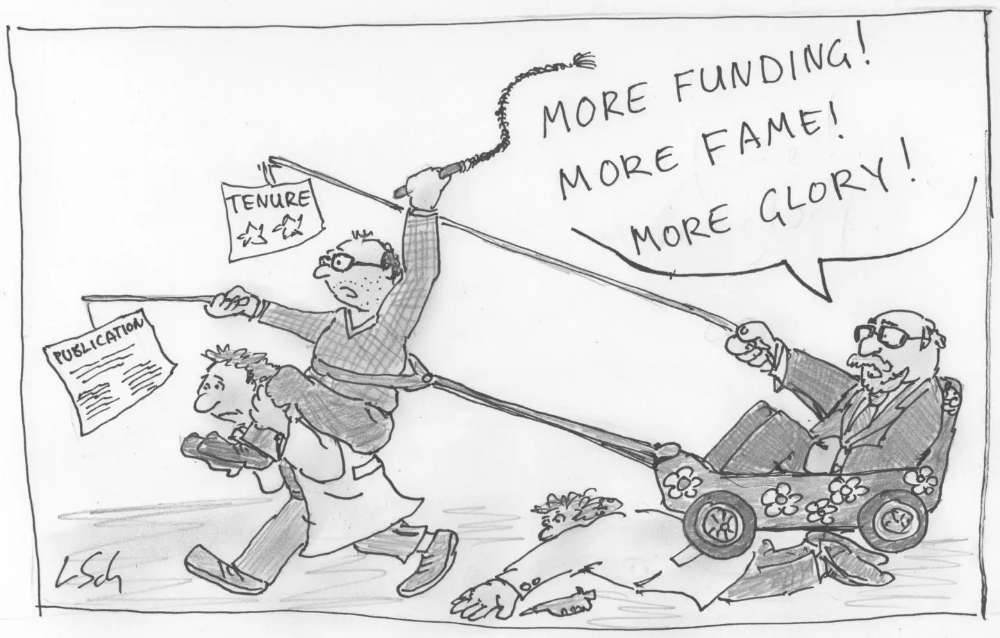

flowchart LR A[BEFORE ANALYSIS] --> B[DURING ANALYSIS] B --> C[AFTER ANALYSIS]
9 Recommendations and practices: before, during and after
Researchers and scientists in academic institutions are expected to publish at a regular rate. The more, the better. It may not be demanded, but scientific publications certainly give a boost to a researcher’s carreer (Szabo 2025). Incentives do not necessarily align with the goals of reproducibility, openness, and transparency. For example, the “publish or perish” culture encourages researchers to focus on quantity over quality, leading to rushed publications that may lack thorough documentation and sharing of data and code (Figure 9.1).
Szabo, Csaba. 2025. Unreliable: Bias, Fraud, and the Reproducibility Crisis in Biomedical Research. Columbia University Press.

It is crucial to adopt practices that promote reproducibility at every stage of the research process, from planning to execution to dissemination. In this regard, (Alston and Rick 2021) outlined a series of basic actions and recomentdatiosn toward making research more reproducible based on three stages of a research project: (1) before, (2) during, and (3) after analysis.
Alston, Jesse M., and Jessica A. Rick. 2021. “A Beginner’s Guide to Conducting Reproducible Research.” The Bulletin of the Ecological Society of America 102 (2): e01801. https://doi.org/10.1002/bes2.1801.
We borrow this simple outline to better categorise and explain the set of practical recommendations and practices that follow. Note that most of the following recommendations are already widely accepted best practices for scientific research and that striving for a reasonable level of reproducibility is more achievable than you may expect. Essentially, researchers must think carefully before, during, and after analysis to ensure the reproducibility, openness and transparency of their work.
9.1 Before analysis: planing for reproducibility

“Science is a way of trying not to fool yourself. The principle is that you must not fool yourself, and you are the easiest person to fool.” (Quotes)
Nobel laureate and physics professor Richard Feynman
This slide deck, titled “Before analysis: planning for reproducibility” focuses on the organisational steps a researcher must take before a single line of code is written or data is collected. The central thesis is that reproducibility is not something you “fix” at the end of a research project; it is a mindset that must be integrated into the planning phase to avoid the “reproducibility debt” that accumulates through disorganised workflows.
The presentation emphasises that the “research journey” is often messy and non-linear. To counter this natural entropy, researchers should adopt a “project-centric” approach. This involves treating every research project as a self-contained unit where data, code, and documentation are inextricably linked. It highlights that the primary beneficiary of these practices is often your “future self”, who will inevitably forget the logic behind current decisions. It advocates for moving away from “hand-crafted” manual processes toward automated, scripted workflows that ensure the path from raw data to final results is transparent and repeatable.
List of recommendations/practices:
[#1] Adopt a project-oriented workflow: Use dedicated folders to ensure that all paths are relative to the project root, making the project portable across different computers. In short, one project lives in one folder. The following question is to define what a project is. This usually depends on one’s type of work and circumstances, but some examples of a project are: an experiment in a PhD project, a master’s thesis project, ideas for future research, regular meeting notes/minutes, teaching materials, a review paper, a conference presentation, workshop or seminar materials, a book, or a PhD thesis manuscript. This point is to keep all of the related resources to a given project in its dedicated folder.
[#2] Organise files logically: Choose a folder structure that is consistent, informative, and works for you — and then stick to it. A typical layout separates documentation files (
README.md,LICENSE,CODE_OF_CONDUCT,CONTRIBUTING) from data (data,data-raw), code (scripts,analysis), results (reports,figs), and other documentation (notes,docs). There is no single “correct” structure, but established templates such as The Turing Way’s project template offer a solid, well-documented starting point.[#3] Use consistent, machine-readable file names: Do not rely on filenames like
final_v2_REALLY_FINAL.docx. File names should be machine-readable, human-readable, and play well with default alphabetical ordering. Prefix script names with a number or letter that reflects the analysis sequence (e.g.,01_download_data.R), and prefix data file names with an ISO 8601 date (YYYYMMDD_survey.csv) so files sort naturally by time and their processing order is immediately visible.[#4] Separate raw data from processed data: Never overwrite or otherwise touch your raw data. Store it permanently, read-only, in a dedicated subfolder (e.g.,
data-raw), echoing the lesson of Newton’s letter to Flamsteed (Noy and Noy 2019). Use scripts, not manual edits, to clean and process it, saving the results in a separate subfolder (e.g.,dataordata-clean). Document the cleaning process — main steps, diagrams, and the content, structure, and provenance of each dataset — in a plain-textREADMEfile.[#5] Leverage open data formats: Favour open, text-based formats whenever possible, since they are independent of any specific software vendor and remain accessible over the long term. When a proprietary format is unavoidable, provide an open equivalent alongside it; for instance, CSV next to an Excel file, or GeoPackage next to an ESRI Shapefile. Repositories such as DANS (the Dutch national centre of expertise and repository for research data) publish guidance distinguishing preferred from non-preferred formats to help you choose wisely.
[#6] Document and write “README” files early: Create a
README.mdfile at the start of the project, in the root folder, to describe the project’s purpose, structure, and requirements. This serves as a guide for both current and future collaborators, including your future self. On platforms like GitHub, this file renders automatically when written in Markdown. Add furtherREADMEfiles in subfolders as needed to document metadata or complex content, and keep anotesfolder to track ideas, discussions, and decisions as the project evolves.[#7] Plan for data sharing: A license is a contract between authors and users (Jolly et al. 2012); without one, copyright is automatically and fully retained, which prevents others from legally reusing your data. If you intend to make your data public, always attach a license file (
LICENSE.mdorLICENSE.txt), choosing among options such as Creative Commons (BY, SA, NC, ND combinations), CC0 for public-domain dedication, or Open Data Commons licenses. Institutions often provide their own recommendations — UJI, for example, suggests CC BY-SA for theses and CC BY-NC-SA for teaching materials.[#8] Plan for code sharing: As with data, any software you plan to release publicly needs an explicit license, since unlicensed code defaults to full copyright and cannot legally be reused by others. Broadly, code licenses fall into two families (Morin et al. 2012): permissive licenses, which only require attribution and are generally recommended for academic work, and copyleft licenses, which require derivative works to carry the same license as the original. Choosing the right one early avoids ambiguity for anyone who later wants to build on your code.
[#9] Use version control: Turn your local project folder into a version-controlled repository to track how your work changes over time and to roll back to earlier versions when needed. Version control systems such as Git are especially suited to plain-text formats (code, Markdown, and other text documents) rather than rich or binary formats like Word files or images. Think of it as a “time machine” for your code (and other text files, data files, etc.), one that also documents the reasoning behind each change through commit messages.
[#10] Use online remote repositories: Pairing your local Git repository with an online hosting service such as GitHub, GitLab, or Bitbucket adds collaborative features and development support on top of version control itself, making it far easier for individuals and teams to share and jointly develop code. Beyond hosting, these platforms integrate with issue tracking, pull requests, and continuous integration, and templates like Cookiecutter Data Science offer ready-made repository structures for reproducible projects.
Noy, Natasha, and Aleksandr Noy. 2019. “Let Go of Your Data.” Nature Materials 19 (1): 128–28. https://doi.org/10.1038/s41563-019-0539-5.
Jolly, M, AC Fletcher, and PE Bourne. 2012. “Ten Simple Rules to Protect Your Intellectual Property.” PLoS Computacional Biology 8: e1002766. https://doi.org/10.1371/journal.pcbi.1002766.
Morin, A, J Urban, and P Sliz. 2012. “A Quick Guide to Software Licensing for the Scientist-Programmer.” PLoS Computacional Biology 8 (7): e1002598. https://doi.org/10.1371/journal.pcbi.1002598.
NoteSlide Deck
9.2 During analysis: reproducible workflows

“The ideas we can most trust are those that have been the most tried and tested.” (Quotes)
Philosopher of science Karl Popper
This slide deck, titled “During Research: reproducible workflows”, focuses on the execution phase of a project. While the previous stage (“Before”) dealt with setup adn prep actions, this one provides the practical habits required to maintain a reproducible record as the research actually happens.
The core idea is that reproducibility is a continuous process, not a final step. It introduces the concept of the “computational environment” — the idea that your results are a product of not just your data, but the specific versions of software, libraries, and operating systems you use.
The deck also warns against “manual interventions” (like fixing a typo in a CSV file by hand), as these create “dark matter” in the research process, that is, steps that happened but left no record. Instead, it advocates for a script-based workflow where every transformation of the data is recorded in code. A significant portion of the deck is dedicated to literate programming (using tools like Quarto), which allows researchers to weave together their narrative, their code, and their results into a single, dynamic document that automatically updates when the data changes.
List of recommendations/practices:
[#11] Open data does not guarantee reproducible data:
[#12] Pay attention to data that is relevant for reproducibility:
[#13] Adopt FAIR principles for data management with caution: FAIR data is not necessarily reproducible data. FAIR focuses on making data Findable, Accessible, Interoperable, and Reusable, but it does not guarantee that the data is well-documented or that the analysis can be reproduced. To ensure reproducibility, you need to go beyond FAIR and also focus on the quality of documentation, version control, and providing clear instructions for how to use the data.
[#14] Use open source tools whenever possible:
[#15] Learn/use scripting languages: Avoid manual “point-and-click” operations in software like Excel. If a change is made to the data, it should be documented in a script. AI assistants can be used to generate code snippets, but the researcher should understand and review the code to ensure it is correct and reproducible.
[#16] Embrace notebooks: Use Quarto or similar tools to keep your text and code (scripts) in the same file. This prevents for example “copy-paste” errors between your statistics software and your word processor.
[#17] Manage sofware dependences: Save information about your software versions and package dependencies. This allows others to recreate the exact technical conditions under which your results were generated.
[#18] Record your computational environment:
[#19] Adopt FAIR principles for software/code management:
[#20] Automate workflows: Use tools such as Make or similar tools to automate the execution of your analysis pipeline. This ensures that all steps are executed in the correct order and that any changes to the data or code will trigger the necessary updates to the results.
NoteSlide Deck
9.3 After analysis: writing and sharing reproducible resources

“I do not mind if you think slowly, but I do object when you publish more quickly than you think.” (Quotes)
Nobel laureate and physics professor Wolfgang Pauli
This presentation, titled “After analysis: writing and sharing reproducible resources,” focuses on the final stages of the research lifecycle: how to document, cite, and share materials so that others (and your future self) can verify and build upon your work.
The core message is a shift from “Trust Me” (results published without access to data/code) to “Show Me” (pre-publication transparency). It argues that the common phrase “data and code available upon request” is insufficient and often leads to a dead end. Instead, reproducibility requires proactive sharing of all computational artifacts, including software versions, specific libraries, and raw data, at the time of submission.
The deck emphasises that software is a primary research object, not just a tool. This means researchers must explicitly cite the software and packages they use, just as they would cite a journal article. The presentation advocates for the use of Research Compendia and modern publishing tools like Quarto to create “dynamic documents” where the analysis and the narrative are linked. The ultimate goal is to move towards “reproducible manuscripts” that allow readers to interact with the data and code directly within the article, fostering a culture of openness and verification in scientific research/publishing.
List of recommendations/practices:
[#21] Move beyond “Available Upon Request”: Never rely on post-publication requests. Data and code must be available at the time of pre-publication or submission.
[#22] Report software versions: Always specify the exact versions of packages, libraries, and frameworks used. A change in version can lead to different results.
[#23] Cite the software you use: Treat software as a first-class citizen. Use commands like
citation()in R to get proper references for the R engine and specific packages.[#24] Include a DASA Section: Add a “Data and Software Availability” (DASA) section to your paper. This section should provide persistent links (like DOIs) to repositories and describe the conditions for access.
[#25] Share preprints: Deposit versions of your paper in repositories (like arXiv, BioRxiv, or SocArXiv) before formal journal review to increase visibility and access.
[#26] Formally share data and code: Document and deposit your resources in permanent repositories (like Zenodo or OSF) and link them to your GitHub account for versioned archiving.
[#27] Create research compendia: Organize all digital materials (data, code, reports) in a standardized, recognizable collection to make the entire project easy to navigate.
[#28] Use literate programming tools: Adopt tools like Quarto or RMarkdown to create dynamic documents where code and text are woven together, ensuring figures and tables update automatically.
[#29] Aim for reproducible manuscripts: Look toward the future of publishing—interactive papers that allow readers to engage with the data and code directly within the article.
[#30] Spread the word: Reproducibility is a community effort and a cultural change. Encourage colleagues to adopt these practices.
NoteSlide Deck